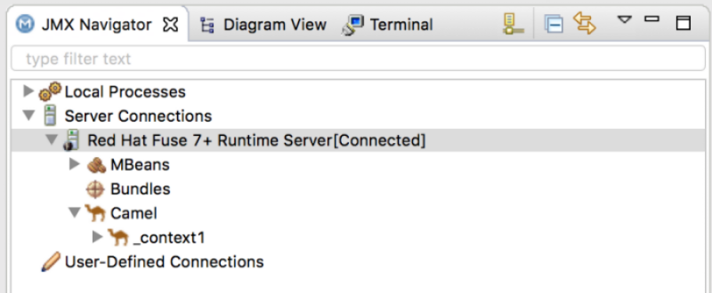
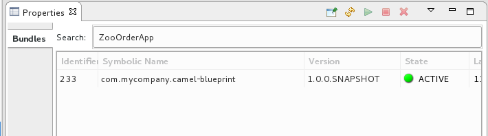

This tutorial walks you through the process of publishing your project to Red Hat Fuse. It assumes that you have an instance of Red Hat Fuse installed on the same machine on which you are running the Red Hat Fuse Tooling.
In this tutorial you complete the following tasks:
- Define a Red Hat Fuse server
- Configure the publishing options
- Start up the Red Hat Fuse server and publish the
ZooOrderAppproject - Connect to the Red Hat Fuse server
- Verify whether the
ZooOrderAppproject’s bundle was successfully built and published - Uninstall the
ZooOrderAppproject
Before you start this tutorial you need:
- Access to a Red Hat Fuse instance
- Java 8 installed on your computer
The ZooOrderApp project resulting from one of the following:
Complete the Testing a route with JUnit tutorial.
or
- Complete the Setting up your environment tutorial and replace your project’s
blueprint.xmlfile with the providedblueprintContexts/blueprint3.xmlfile, as described in About the resource files.
To define a server:
- Open the Fuse Integration perspective.
- Click the Servers tab in the lower, right panel to open the Servers view.
Click the No servers are available. Click this link to create a new server… link to open the Define a New Server page.
![[Note]](imagesdb/note.png)
Note To define a new server when one is already defined, right-click inside the Servers view and then select New → Server.
Expand the Red Hat JBoss Middleware node to expose the available server options:

- Select a Red Hat Fuse server.
Accept the defaults for Server’s host name (localhost) and Server name (Fuse n.n Runtime Server), and then click Next to open the Runtime page:

Note If you do not have Fuse already installed, you can download it now using the Download and install runtime link.
If you have already defined a server, the tooling skips this page, and instead displays the configuration details page.
- Accept the default for Name.
- Click Browse next to the Home Directory field, to navigate to the installation and select it.
Select the runtime JRE from the drop-down menu next to Execution Environment.
Select JavaSE-1.8 (recommended). If necessary, click the Environments button to select it from the list.
Note The Fuse server requires Java 8 (recommended). To select it for the Execution Environment, you must have previously installed it.
- Leave the Alternate JRE option as is.
Click Next to save the runtime definition for the Fuse Server and open the Fuse server configuration details page:

Accept the default for SSH Port (8101).
The runtime uses the SSH port to connect to the server’s Karaf shell. If this default is incorrect, you can discover the correct port number by looking in the Red Hat Fuse
installDir/etc/org.apache.karaf.shell.cfgfile.In User Name, enter the name used to log into the server.
This is a user name stored in the Red Hat Fuse installDir`/etc/users.properties` file.
Note If the default user has been activated (uncommented) in the
/etc/users.propertiesfile, the tooling autofills User Name and Password with the default user’s name and password.If one has not been set, you can either add one to that file using the format
user=password,role(for example,joe=secret,Administrator), or you can set one using the karafjaascommand set:jaas:realms— to list the realmsjaas:manage --index 1— to edit the first (server) realmjaas:useradd <username> <password>— to add a user and associated passwordjaas:roleadd <username> Administrator— to specify the new user’s rolejaas:update— to update the realm with the new user informationIf a jaas realm has already been selected for the server, you can discover the user name by issuing the command
JBossFuse:karaf@root>jaas:users.
In Password, type the password required for User name to log into the server.
This is the password set either in Red Hat Fuse’s
installDir/etc/users.propertiesfile or by the karafjaascommands.Click Finish.
Runtime Server [stopped, Synchronized] appears in the Servers view.
In the Servers view, expand Runtime Server [stopped, Synchronized]:

JMX[Disconnected] appears as a node under the Runtime Server [stopped, Synchronized] entry.
Using publishing options, you can configure how and when your
ZooOrderApp project is published to a running server:
- Automatically, immediately upon saving changes made to the project
- Automatically, at configured intervals after you have changed and saved the project
- Manually, when you select a publish operation
In this tutorial, you configure immediate publishing upon saving changes
to the ZooOrderApp project. To do so:
- In the Servers view, double-click the Runtime Server [stopped, Synchronized] entry to display its overview.
On the server’s Overview page, expand the Publishing section to expose the options.

Make sure that the option Automatically publish when resources change is enabled.
Optionally, change the value of Publishing interval to speed up or delay publishing the project when changes have been made.
- In the Servers view, click
 .
. Wait a few seconds for the server to start. When it does:
The Terminal view displays the splash screen:

The Servers view displays:

The JMX Navigator displays n.n Runtime Server[Disconnected:

In the Servers view, right-click n.n Runtime Server [Started] and then select Add and Remove to open the Add and Remove page:

Make sure the option If server is started, publish changes immediately is checked.
Select
ZooOrderAppand click Add to assign it to the Fuse server:
Click Finish.
The Servers view should show the following:

Runtime Server [Started, Synchronized]
Note For a server, synchronized means that all modules published on the server are identical to their local counterparts.
ZooOrderApp [Started, Synchronized]
Note For a module, synchronized means that the published module is identical to its local counterpart. Because automatic publishing is enabled, changes made to the ZooOrderApp project are published in seconds (according to the value of the Publishing interval).
- JMX[Disconnected]
After you connect to the runtime server, you can see the published elements of your ZooOrderApp project and interact
with them.
- In the Servers view, double-click JMX[Disconnected] to connect to the runtime server.
In the JMX Navigator, expand the
Camelfolder to expose the elements of theZooOrderApp.Click the Bundles node to populate the Properties view with the list of bundles installed on the runtime server:

In the Search field, type ZooOrderApp. The corresponding
com.mycompany.camel-blueprintbundle is shown:Note Alternatively, you can issue the
osgi:listcommand in the Terminal view to see a generated list of bundles installed on the server runtime. The tooling uses a different naming scheme for OSGi bundles displayed by theosgi:listcommand. In this case, the command returnsCamel Blueprint Quickstart, which appears at the end of the list of installed bundles.In the
<build>section of project’spom.xmlfile, you can find the bundle’s symbolic name and its bundle name (OSGi) listed in themaven-bundle-pluginentry:
| Note |
|---|---|
You do not need to disconnect the JMX connection or stop the server to uninstall a published resource. |
To remove the ZooOrderApp resource from the runtime server:
- In the Servers view, right-click n.n Runtime Server to open the context menu.
Select Add and Remove:

- In the Configured column, select
ZooOrderApp, and then click Remove to move theZooOrderAppresource to the Available column. - Click Finish.
In the Servers view, right-click JMX[Connected] and then click Refresh.
The
Cameltree under JMX[Connected] disappears.Note In JMX Navigator, the
Cameltree under Server Connections > n.n Runtime Server[Connected] also disappears.- With the Bundles page displayed in the Properties view, scroll down to the end of the list to verify that the ZooOrderApp’s bundle is no longer listed.